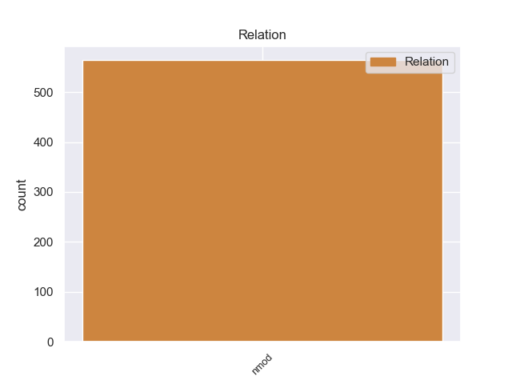
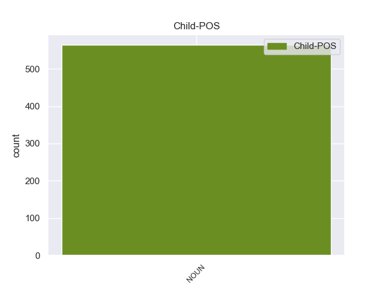

Distribution of features within this leaf



Agreement Rules sorted by frequency.
- When the dependent token is the nominal modifier(nmod) of the head token, and the head token is PRON and the dependent token is NOUN.
1 Tahai _ _ _ _ 0 _ _ _
2 es _ _ _ _ 0 _ _ _
3 uno uno PRON _ Gender=Masc|Number=Sing|PronType=Ind 0 _ _ _
4 de _ _ _ _ 0 _ _ _
5 los _ _ _ _ 0 _ _ _
6 lugares lugare NOUN _ Gender=Masc|Number=Plur 3 nmod _ _
7 más _ _ _ _ 0 _ _ _
8 lindos _ _ _ _ 0 _ _ _
9 de _ _ _ _ 0 _ _ _
10 la _ _ _ _ 0 _ _ _
11 isla _ _ _ _ 0 _ _ _
12 , _ _ _ _ 0 _ _ _
13 y _ _ _ _ 0 _ _ _
14 estar _ _ _ _ 0 _ _ _
15 hospedado _ _ _ _ 0 _ _ _
16 en _ _ _ _ 0 _ _ _
17 pleno _ _ _ _ 0 _ _ _
18 mirador _ _ _ _ 0 _ _ _
19 es _ _ _ _ 0 _ _ _
20 increíble _ _ _ _ 0 _ _ _
21 . _ _ _ _ 0 _ _ _
Disagree Examples:
1 Era _ _ _ _ 0 _ _ _
2 el _ _ _ _ 0 _ _ _
3 partido _ _ _ _ 0 _ _ _
4 mejor _ _ _ _ 0 _ _ _
5 organizado _ _ _ _ 0 _ _ _
6 de _ _ _ _ 0 _ _ _
7 el _ _ _ _ 0 _ _ _
8 país _ _ _ _ 0 _ _ _
9 , _ _ _ _ 0 _ _ _
10 con _ _ _ _ 0 _ _ _
11 comités _ _ _ _ 0 _ _ _
12 en _ _ _ _ 0 _ _ _
13 cada _ _ _ _ 0 _ _ _
14 distrito _ _ _ _ 0 _ _ _
15 y _ _ _ _ 0 _ _ _
16 otro otro PRON _ Gender=Masc|Number=Sing|PronType=Ind 0 _ _ _
17 central _ _ _ _ 0 _ _ _
18 en _ _ _ _ 0 _ _ _
19 la _ _ _ _ 0 _ _ _
20 capital capital NOUN _ Gender=Fem|Number=Sing 16 nmod _ SpaceAfter=No
21 . _ _ _ _ 0 _ _ _
1 En _ _ _ _ 0 _ _ _
2 sus _ _ _ _ 0 _ _ _
3 canciones _ _ _ _ 0 _ _ _
4 podemos _ _ _ _ 0 _ _ _
5 encontrar _ _ _ _ 0 _ _ _
6 diversos _ _ _ _ 0 _ _ _
7 instrumentos _ _ _ _ 0 _ _ _
8 como _ _ _ _ 0 _ _ _
9 el _ _ _ _ 0 _ _ _
10 acordeón _ _ _ _ 0 _ _ _
11 , _ _ _ _ 0 _ _ _
12 la _ _ _ _ 0 _ _ _
13 guitarra _ _ _ _ 0 _ _ _
14 , _ _ _ _ 0 _ _ _
15 el _ _ _ _ 0 _ _ _
16 violoncelo _ _ _ _ 0 _ _ _
17 y _ _ _ _ 0 _ _ _
18 el _ _ _ _ 0 _ _ _
19 piano _ _ _ _ 0 _ _ _
20 , _ _ _ _ 0 _ _ _
21 pero _ _ _ _ 0 _ _ _
22 también _ _ _ _ 0 _ _ _
23 otros otro PRON _ Gender=Masc|Number=Plur|PronType=Ind 0 _ _ _
24 menos _ _ _ _ 0 _ _ _
25 habituales _ _ _ _ 0 _ _ _
26 como _ _ _ _ 0 _ _ _
27 la _ _ _ _ 0 _ _ _
28 trompeta trompeta NOUN _ Gender=Fem|Number=Sing 23 nmod _ SpaceAfter=No
29 , _ _ _ _ 0 _ _ _
30 el _ _ _ _ 0 _ _ _
31 trombón _ _ _ _ 0 _ _ _
32 de _ _ _ _ 0 _ _ _
33 baras _ _ _ _ 0 _ _ _
34 , _ _ _ _ 0 _ _ _
35 la _ _ _ _ 0 _ _ _
36 tuba _ _ _ _ 0 _ _ _
37 , _ _ _ _ 0 _ _ _
38 el _ _ _ _ 0 _ _ _
39 violín _ _ _ _ 0 _ _ _
40 y _ _ _ _ 0 _ _ _
41 otros _ _ _ _ 0 _ _ _
42 muchos _ _ _ _ 0 _ _ _
43 instrumentos _ _ _ _ 0 _ _ _
44 folclóricos _ _ _ _ 0 _ _ _
45 . _ _ _ _ 0 _ _ _
1 Aun _ _ _ _ 0 _ _ _
2 así _ _ _ _ 0 _ _ _
3 , _ _ _ _ 0 _ _ _
4 si _ _ _ _ 0 _ _ _
5 comparamos _ _ _ _ 0 _ _ _
6 esta _ _ _ _ 0 _ _ _
7 densidad _ _ _ _ 0 _ _ _
8 con _ _ _ _ 0 _ _ _
9 la el PRON _ Case=Acc|Gender=Fem|Number=Sing|Person=3|PrepCase=Npr|PronType=Prs 0 _ _ _
10 de _ _ _ _ 0 _ _ _
11 el _ _ _ _ 0 _ _ _
12 plomo plomo NOUN _ Gender=Masc|Number=Sing 9 nmod _ _
13 , _ _ _ _ 0 _ _ _
14 de _ _ _ _ 0 _ _ _
15 unos _ _ _ _ 0 _ _ _
16 11 _ _ _ _ 0 _ _ _
17 g _ _ _ _ 0 _ _ _
18 / _ _ _ _ 0 _ _ _
19 cm _ _ _ _ 0 _ _ _
20 ³ _ _ _ _ 0 _ _ _
21 , _ _ _ _ 0 _ _ _
22 vemos _ _ _ _ 0 _ _ _
23 que _ _ _ _ 0 _ _ _
24 representa _ _ _ _ 0 _ _ _
25 una _ _ _ _ 0 _ _ _
26 considerable _ _ _ _ 0 _ _ _
27 compresión _ _ _ _ 0 _ _ _
28 , _ _ _ _ 0 _ _ _
29 sobre _ _ _ _ 0 _ _ _
30 todo _ _ _ _ 0 _ _ _
31 cuando _ _ _ _ 0 _ _ _
32 se _ _ _ _ 0 _ _ _
33 considera _ _ _ _ 0 _ _ _
34 que _ _ _ _ 0 _ _ _
35 en _ _ _ _ 0 _ _ _
36 el _ _ _ _ 0 _ _ _
37 interior _ _ _ _ 0 _ _ _
38 de _ _ _ _ 0 _ _ _
39 el _ _ _ _ 0 _ _ _
40 blanco _ _ _ _ 0 _ _ _
41 tenemos _ _ _ _ 0 _ _ _
42 unas _ _ _ _ 0 _ _ _
43 densidades _ _ _ _ 0 _ _ _
44 iniciales _ _ _ _ 0 _ _ _
45 de _ _ _ _ 0 _ _ _
46 de _ _ _ _ 0 _ _ _
47 unos _ _ _ _ 0 _ _ _
48 0,1 _ _ _ _ 0 _ _ _
49 g _ _ _ _ 0 _ _ _
50 / _ _ _ _ 0 _ _ _
51 cm _ _ _ _ 0 _ _ _
52 ³ _ _ _ _ 0 _ _ _
53 de _ _ _ _ 0 _ _ _
54 DT _ _ _ _ 0 _ _ _
55 . _ _ _ _ 0 _ _ _
1 La _ _ _ _ 0 _ _ _
2 Puerta _ _ _ _ 0 _ _ _
3 de _ _ _ _ 0 _ _ _
4 Alcalá _ _ _ _ 0 _ _ _
5 es _ _ _ _ 0 _ _ _
6 en _ _ _ _ 0 _ _ _
7 la _ _ _ _ 0 _ _ _
8 actualidad actualidad NOUN _ Gender=Fem|Number=Sing 9 nmod _ _
9 uno uno PRON _ Gender=Masc|Number=Sing|PronType=Ind 0 _ _ _
10 de _ _ _ _ 0 _ _ _
11 los _ _ _ _ 0 _ _ _
12 referentes _ _ _ _ 0 _ _ _
13 monumentales _ _ _ _ 0 _ _ _
14 más _ _ _ _ 0 _ _ _
15 relevantes _ _ _ _ 0 _ _ _
16 de _ _ _ _ 0 _ _ _
17 la _ _ _ _ 0 _ _ _
18 ciudad _ _ _ _ 0 _ _ _
19 de _ _ _ _ 0 _ _ _
20 Madrid _ _ _ _ 0 _ _ _
21 , _ _ _ _ 0 _ _ _
22 aunque _ _ _ _ 0 _ _ _
23 la _ _ _ _ 0 _ _ _
24 imagen _ _ _ _ 0 _ _ _
25 presente _ _ _ _ 0 _ _ _
26 debe _ _ _ _ 0 _ _ _
27 imaginar _ _ _ _ 0 _ _ _
28 se _ _ _ _ 0 _ _ _
29 como _ _ _ _ 0 _ _ _
30 el _ _ _ _ 0 _ _ _
31 colofón _ _ _ _ 0 _ _ _
32 de _ _ _ _ 0 _ _ _
33 un _ _ _ _ 0 _ _ _
34 proceso _ _ _ _ 0 _ _ _
35 evolutivo _ _ _ _ 0 _ _ _
36 iniciado _ _ _ _ 0 _ _ _
37 a _ _ _ _ 0 _ _ _
38 finales _ _ _ _ 0 _ _ _
39 de _ _ _ _ 0 _ _ _
40 el _ _ _ _ 0 _ _ _
41 siglo _ _ _ _ 0 _ _ _
42 XVI _ _ _ _ 0 _ _ _
43 . _ _ _ _ 0 _ _ _
1 Hasta _ _ _ _ 0 _ _ _
2 el _ _ _ _ 0 _ _ _
3 momento _ _ _ _ 0 _ _ _
4 un _ _ _ _ 0 _ _ _
5 total _ _ _ _ 0 _ _ _
6 de _ _ _ _ 0 _ _ _
7 6 _ _ _ _ 0 _ _ _
8 equipos _ _ _ _ 0 _ _ _
9 diferentes _ _ _ _ 0 _ _ _
10 han _ _ _ _ 0 _ _ _
11 logrado _ _ _ _ 0 _ _ _
12 alzar _ _ _ _ 0 _ _ _
13 se _ _ _ _ 0 _ _ _
14 con _ _ _ _ 0 _ _ _
15 el _ _ _ _ 0 _ _ _
16 triunfo _ _ _ _ 0 _ _ _
17 en _ _ _ _ 0 _ _ _
18 esta _ _ _ _ 0 _ _ _
19 competición _ _ _ _ 0 _ _ _
20 desde _ _ _ _ 0 _ _ _
21 que _ _ _ _ 0 _ _ _
22 fuera _ _ _ _ 0 _ _ _
23 organizada _ _ _ _ 0 _ _ _
24 en _ _ _ _ 0 _ _ _
25 el _ _ _ _ 0 _ _ _
26 año _ _ _ _ 0 _ _ _
27 2006 _ _ _ _ 0 _ _ _
28 , _ _ _ _ 0 _ _ _
29 uno uno PRON _ Gender=Masc|Number=Sing|PronType=Ind 0 _ _ _
30 distinto _ _ _ _ 0 _ _ _
31 en _ _ _ _ 0 _ _ _
32 cada _ _ _ _ 0 _ _ _
33 edición edición NOUN _ Gender=Fem|Number=Sing 29 nmod _ _
34 , _ _ _ _ 0 _ _ _
35 siendo _ _ _ _ 0 _ _ _
36 el _ _ _ _ 0 _ _ _
37 FK _ _ _ _ 0 _ _ _
38 Berane _ _ _ _ 0 _ _ _
39 el _ _ _ _ 0 _ _ _
40 que _ _ _ _ 0 _ _ _
41 más _ _ _ _ 0 _ _ _
42 ascensos _ _ _ _ 0 _ _ _
43 a _ _ _ _ 0 _ _ _
44 Primera _ _ _ _ 0 _ _ _
45 División _ _ _ _ 0 _ _ _
46 posee _ _ _ _ 0 _ _ _
47 en _ _ _ _ 0 _ _ _
48 su _ _ _ _ 0 _ _ _
49 historial _ _ _ _ 0 _ _ _
50 . _ _ _ _ 0 _ _ _